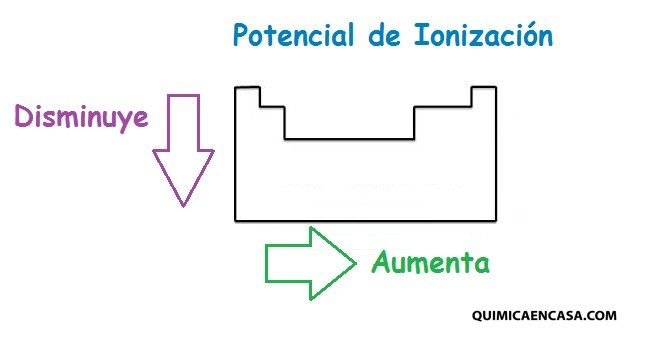
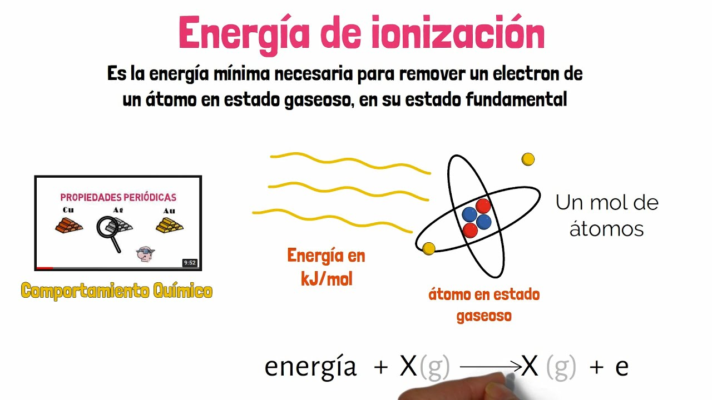
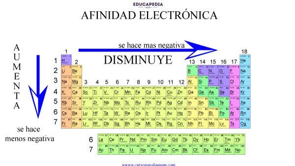
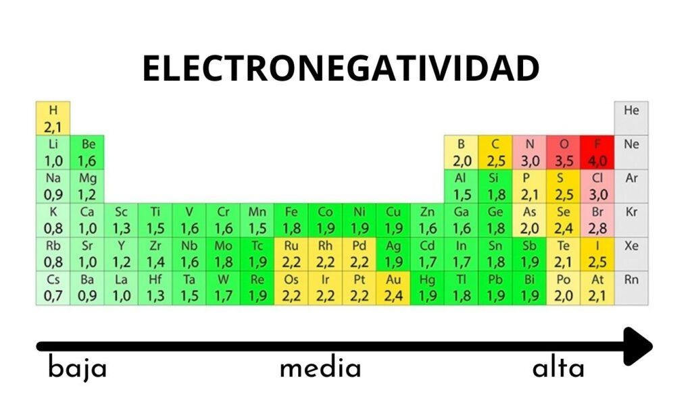

PROPIEDADES PERIÓDICAS DE LOS ELEMENTOS QUÍMICOS
Las propiedades periódicas de los elementos químicos son las características de los elementos que están relacionadas por su ubicación en la tabla periódica de acuerdo a su número atómico, conociendo sus valores tu puedes conocer sus propiedades o comportamiento químico de los elementos químicos y se denominan periódicas porque se repiten secuencialmente o de modo regular en la Tabla periódica cada número determinado de elementos.
Entre las propiedades que varían de forma periódica están: el radio atómico, energía de ionización, afinidad electrónica, electronegatividad, y carácter metálico.

RELACIONES DE TAMAÑO
radio atómico:
Es la distancia media de un enlace entre átomos iguales. Cuantas más capas tenga el átomo mayor su radio, tiene su lógica al agregar más capas mayor radio abarca el átomo. Por otro lado disminuye de izquierda a derecha a lo largo de un período de elementos. Esto se debe al efecto apantallamiento es menor en la última capa.
RELACIONES DE ENERGÌA
Potencial de ionizaciòn:
Se define como la energía necesaria para ionizar un átomo en estado gaseoso. En palabras más simples la energía necesaria para sustraer un electrón de valencia (electrones de la última capa). Aumenta y disminuye al contrario del radio atómico. Como es lógico al aumentar el tamaño es más fácil sustraer un electrón del átomo.
El potencial de ionización (PI) es la energía mínima requerida para separar un electrón de un átomo o molécula específica a una distancia tal que no exista interacción electrostática entre el ion y el electrón.1 Inicialmente se definía como el potencial mínimo necesario para que un electrón saliese de un átomo que queda ionizado. El potencial de ionización se medía en voltios. En la actualidad, sin embargo, se mide en electronvoltios (aunque no es una unidad del SI) aunque es aceptada en julios por mol. El sinónimo de energía de ionización (EI) se utiliza con frecuencia. La energía para separar el electrón unido más débilmente al átomo es el primer potencial de ionización; sin embargo, hay alguna ambigüedad en la terminología. Así, en química, el segundo potencial de ionización del litio es la energía del proceso.
 
Afinidad electrònica:
Se define como la variación energía de un átomo en estado gaseoso al captar un electrón. Es más difícil establecer un criterio genérico, pero por norma general aumenta a lo largo de un período y disminuye según se desciende en un grupo. 
Electronegatividad:
Es una medida de la capacidad de un átomo para atraer electrones. La electronegatividad aumenta a lo largo de un período y disminuye según se desciende en un grupo. Por tanto, los elementos más electronegativos están situados en la parte superior derecha de la tabla periódica. Carácter metálico:
Es la tendencia del elemento a perder electrones y aumenta al aumentar el radio de átomo. Es un resumen general de las propiedades, muchas de ellas tienen excepciones que no hemos profundizado en detalle.